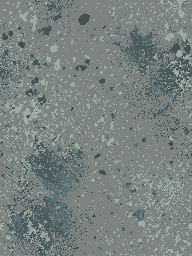

消防楼梯：灰色哑光矿物复合面 v1
一个梯跑＋平台的材质小样，墙身沿用 r24。踏步、平台统一材质；扶手仅占位。待审图，尚未替换全楼梯。
1280×720 原图；相同48°透视和临时中性审图光。上段墙、返程梯跑与屋顶为剖切省略，不代表正式建筑缺失。没有新增最终灯带或运动感应。
Blender 工程 · GLB · 制作记录／边界
同机位：灰模与主候选 A
 灰模对照，几何与灯光相同。
灰模对照，几何与灯光相同。 A：细颗粒矿物面＋r24 墙身。默认小样。
A：细颗粒矿物面＋r24 墙身。默认小样。材料近看
 踏步与立板：关注前缘、像素颗粒和灰色块面。
踏步与立板：关注前缘、像素颗粒和灰色块面。 转向平台：与踏步相同材质，检查平铺及整体感。
转向平台：与踏步相同材质，检查平铺及整体感。备用 B：较粗颗粒
A，较细。B，较粗；仅比较，没有混铺到默认模型。
原生贴图裁片
 A · 192×256
A · 192×256
B · 192×256主体绘画均由 PixelLab 生成；只做原生裁切和 Aseprite 分层打包，未以程序绘制做旧。Pixel Canals 仅作为人工观察的风格硬参考，未向生成服务上传其内容。